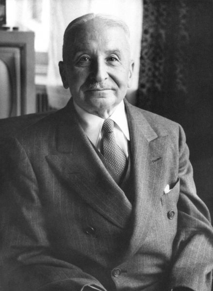

Um dos Principais Economistas da ideologia Liberal.
Ludwig von Mises foi um dos mais notáveis economistas e filósofos liberais da história, e o principal teórico da Escola Austríaca de Economia do século XX. Ele desenvolveu a Praxeologia, método dedutivo para se entender a Economia; é o pai da Escola Neo-austríaca de Economia, e também tinha doutorado em Leis e Ciências Sociais. Judeu, nascido em 29 de setembro de 1881 em Lemberg, na época, uma cidade do Império Áustro-Húngaro. Ludwig Heinrich Edler von Mises era o primogênito de 3 filhos. Seu pai era um engenheiro ferroviário, Arthur Edler von Mises, e sua mãe, Adele Landau, fazia trabalho de caridade num orfanato judeu.
Em 1920, três anos após o golpe que destronou o Império na Rússia, o economista já denunciava a catástrofe que os socialistas trariam para a Economia e para as liberdades civis. Mises mostrou que sem a propriedade privada, o cálculo econômico é impossível, o que impossibilita o Socialismo. Ele ainda enfatizou que ao controlar os fatores de produção, o Socialismo também controlava a vida de cada indivíduo: o Estado define a profissão dos cidadãos, o que devem comer ou ler, quais crenças e idéias podem abraçar. Os nazistas eram inimigos do Captalismo, do Liberalismo Economico e como já é sabido, dos judeus. Mises reunia as três características, e temia perseguições nazistas. Embora fosse um economista muito respeitado na Áustria, ele já sofria represálias na Universidade de Viena por ser judeu e por ser capitalista: os judeus que eram mais respeitados haviam abraçado o Socialismo, então sua origem étnica e idéias de liberdade dificultaram mais sua situação, o obrigando a ensinar sem ser pago pela universidade por 14 anos. Ele era um privatdozent, tinha permissão para dar aulas e ser chamado de professor, mas sem ser pago. A cada duas semanas, Mises ensinava para mais ou menos 25 alunos em seu escritório, um seminário que durava das 19h às 22h30, com discussões de Economia, Filosofia Social, Sociologia, Lógica e Epistemologia das Ciências da Ação Humana. Anos após o fim da União das Repúblicas Socialistas Soviéticas revelariam outros dados: foram encontrados 10 mil documentos de Mises que haviam sido roubados pela Gestapo e depois passaram para as mãos dos soviéticos, enfatizando o perigo que ambas as forças totalitaristas enxergavam nas teses de Mises.
Mises foi embora da Áustria para a Suíça e em 1938 se casou com a atriz Margit Herzfeld, que já tinha dois filhos e era viúva. Eles foram para os Estados Unidos da América em 1940, e se estabeleceram em um pequeno apartamento em Nova York, onde moraram até o fim de suas vidas. Mises foi professor da New York University (primeiro como professor pago, depois outros indivíduos e instituições pagaram seu salário quando a universidade passou a se recusar) e ainda foi contratado pela Foudation for Economic Education como autor e palestrante. Mises morreu aos 92 anos em 1973, e seu legado inclui diversos livros, dentre eles “A Ação Humana: Um tratado de Economia”, chamado de “Bíblia econômica do homem civilizado” pelo economista Murray N. Rothbard. Em 1974, seu seguidor Friedrich Hayek ganhou o Nobel de Economia com sua teoria misesiana dos ciclos econômicos. Já em 1982, o jornalista Llewellyn Rockwell fundou o Ludwig von Mises Institute, nos Estados Unidos; e atualmente existem outros Institutos von Mises pelo mundo, inclusive no Brasil (desde 2007).